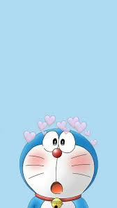

Welcome!
Doraemon is one of the most popular manga and anime series in Japan. The main character Doraemon is a cat-shaped robot who came from the future. It was created by the famous manga creator Fujiko F Fujio. It was serialized in monthly elementary school children’s magazines from 1969 and it is still running today.
Doremon
Doremon is male robotic earless cat.